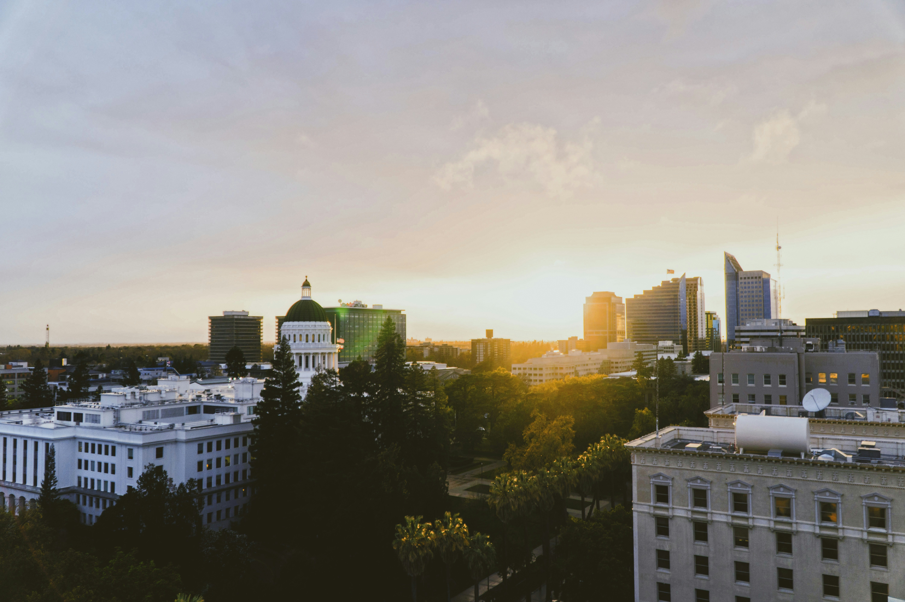

Sacramento (Capital)
City Facts
- Population: ~525,000
- Incorporated: 1849
- Region: Northern California / Central Valley
- Classification: Urban
- Median household income (Sacramento): $83,753
- Median household income (California): $96,334
- Comparison: Below state average
Attractions
California State Capitol area, Old Sacramento Waterfront, and the Tower Bridge.
Parks
American River Parkway, McKinley Park, and William Land Park.
Museums
Crocker Art Museum and the California State Railroad Museum.
Food
Farm-to-fork spots and local cafés downtown and along R Street.
About Sacramento
Located at the confluence of the Sacramento and American Rivers. Known for the state capitol, Old Sacramento, and farm-to-fork cuisine.
Top 3 Things to Do
- California State Capitol Museum
- Old Sacramento Waterfront
- Crocker Art Museum